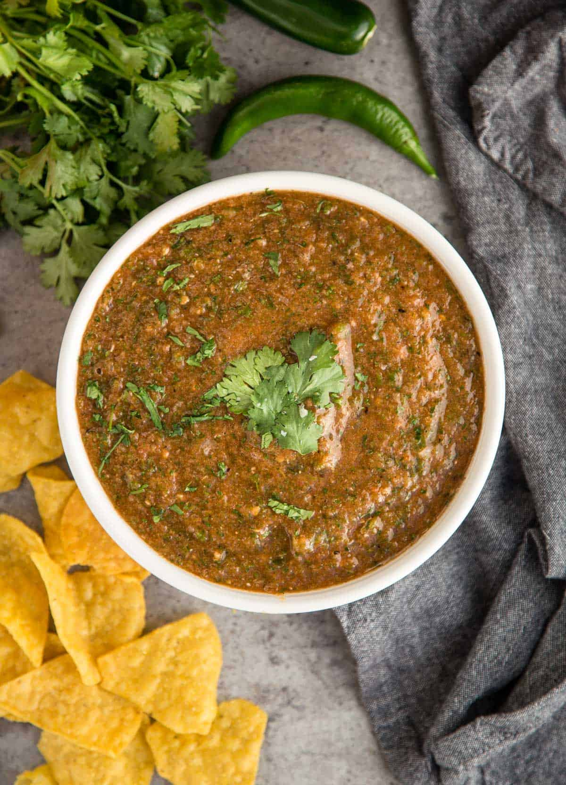

Roasted Tomato Salsa

Description
Roasted tomatoes, peppers and aromatics make a flavorful, delicious salsa.
Ingredients
- 4 Roma tomatoes
- 1 Red onion
- 2 Jalapenos (seeds and ribs removed, if desired)
- Juice of half a lime
- 1 Bunch of cilantro
- Salt
Instructions
- Preheat oven broil on high.
- Cut tomatoes and onion into quarters. Slice jalapenos in half and remove seeds, if desired.
- Place vegetables onto a cookie sheet and spray with olive oil.
- Broil vegetables until slightly charred, about 5-10 minutes.
- Remove tray from oven and add all ingredients into a blender. Season to taste.
- Blend until almost smooth and serve with tortilla chips or your favorite Mexican dishes.